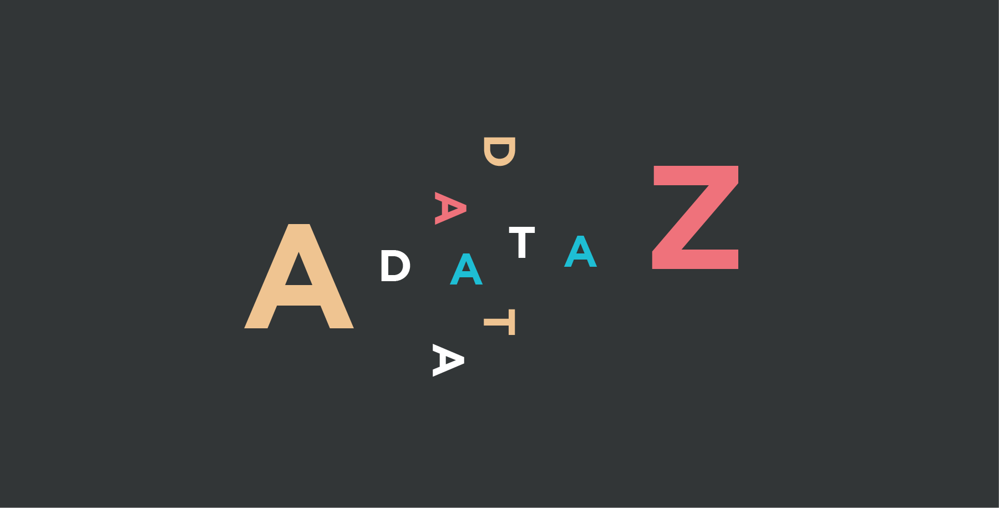
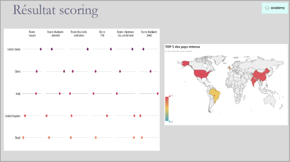
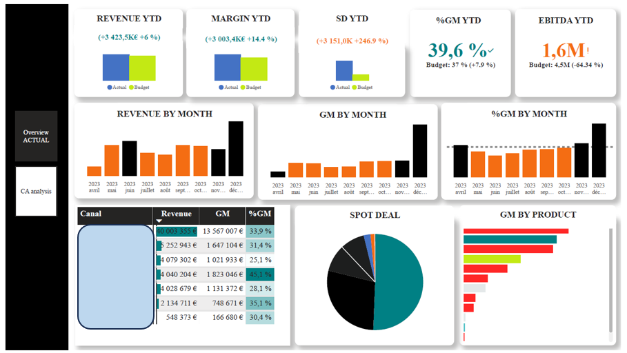
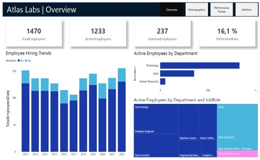
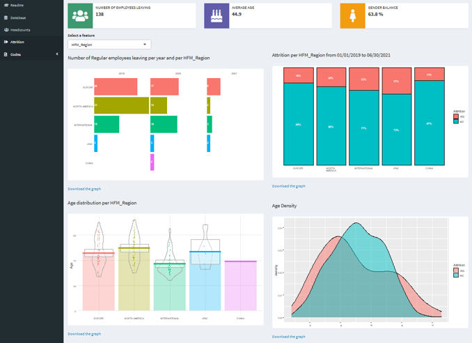
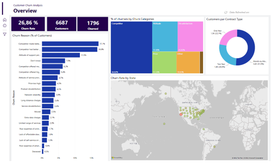
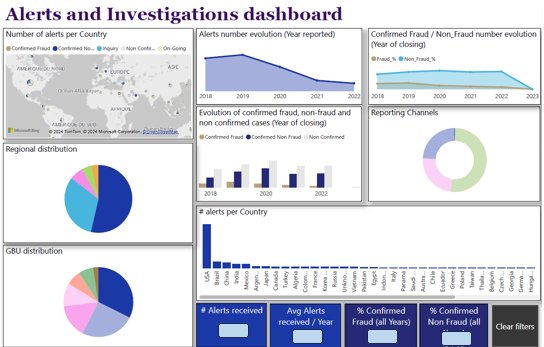

About Me

Hi! I am Emilie,
A 3 years' experienced Data Analyst with a background of 10 years in financial data valorization.
I collect, process, analyse and present data from supporting every day business decisions.
I enjoy solving problems with data, whether that is a personal problem, like analyzing the market data to stay
up to date with the latest skills, analyzing local real estate market before investing, or in my day to day job,
using data to support the business to take more informed decisions, improve the stakeholders / customers experience
and profitability.
Education:
✔️ Program Data Upskilling | Benjamin Dubreu | 2024
✔️ Data Scientist | OPENCLASSROOMS | 2022-2023
✔️ MBA Big Data – Chief Data Officer | MBA ESG Paris - Groupe ESG | 2020-2021
✔️ Master’s degree in Finance – Accounting | IAE Nice | 2008-2009
Data Analytics
📊 Strategic recommendations (Python):
A company with an international expansion project would like to know if education data
from the World Bank helps to inform its expansion project (Python):
data quality
exploratory analysis
merge between multiple data sources
identification of relevant indicators
creation of a score based on the indicators

📊 Financial Dashboard (Power BI):
Financial dashboard to follow the main KPIs such as revenue, gross margin etc.
in order to facilitate the company management.

📊 HR Analytics (Power BI):
Exploratory data analysis to understand what factors impact attrition to help the
organization determine what action they will need to take to retain more employees.

📊 HR Analytics (R Shiny):
Web application that aims to visualize the headcounts allocation and attrition:
Tab Database : data used to produce the plots
Tab Headcounts: headcounts allocation
Tab Attrition: employees that have left the company

📊 Churn rate analysis (Power BI):
Why customers are churning at the rate they are, and how to reduce churn.

📊 Investigations (Power BI):
Follow-up of alerts & frauds with highlights and root causes analysis.

Datascience projects

📊 Financial Dashboard:
Financial dashboard to follow the main KPIs (Power BI):
📊 HR Analytics:
Exploratory data analysis to understand what factors impact attrition to help the
organization determine what action they will need to take to retain more employees (Power BI):
📊 HR Analytics:
Web application that aims to visualize the headcounts allocation and attrition (R Shiny):
Tab Database : data used to produce the plots
Tab Headcounts: headcounts allocation
Tab Attrition: employees that have left the company
-
📊 Churn rate analysis:
Why customers are churning at the rate they are, and how to reduce churn (Power BI):
📊 Investigations: follow-up of alerts & frauds with highlights and root causes analysis (Power BI):
Contact
Localization: Aix-en-Provence, France